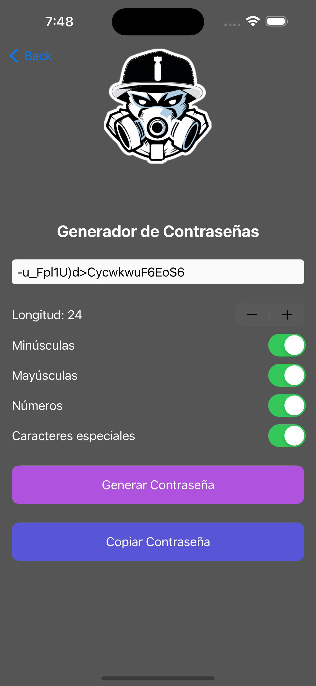

PassGenerator
PassGenerator es una aplicación práctica y segura que te permite generar contraseñas robustas en segundos.
Personaliza la longitud, incluye símbolos, números y letras mayúsculas para crear claves fuertes que protejan tus
cuentas.
Ideal para mejorar tu seguridad digital, esta app ofrece una experiencia simple, eficiente y confiable para
gestionar tu privacidad.